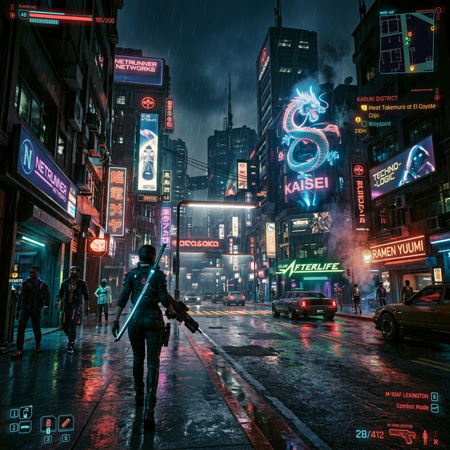
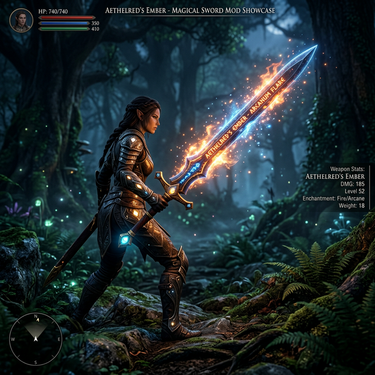
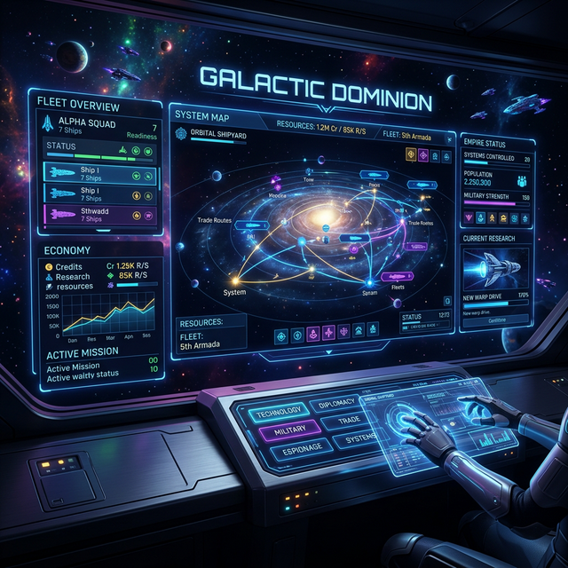

Oyununu Yapay Zeka ile Şekillendir.
Sadece nasıl bir deneyim istediğini yaz. Doğal dil işleme (NLP) ile aramanı anlasın, sana en uygun modları bulsun.
RPG Savaş Yenilikleri
Sistemi Yormayan Grafikler
Gerçekçi Hava Durumu
Oynadığın oyunlar ve beğendiğin mod geçmişine göre yapay zeka tarafından sadece senin için seçildi.

98% Eşleşme
Cyberpunk Ultra HD Revamp
Tüm dokuları 4K seviyesine çıkarırken performansı koruyan yapay zeka destekli grafik pakedi.

92% Eşleşme
Efsanevi Kılıçlar Genişlemesi
Oyuna 50'den fazla özel animasyonlu yeni büyü kılıcı ekler. AI animasyon motoru ile uyumlu.

85% Eşleşme
Clean HUD Pro V2
Arayüzü tamamen özelleştirebileceğiniz, holografik detaylara sahip minimal tasarım.